Slashers
Máscaras, cuchillas y alguien que nunca muere del todo.
-

El Resplandor
1980 · Stanley Kubrick
-
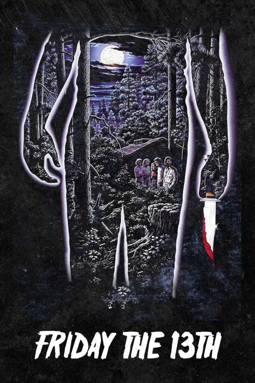
Viernes 13
1980 · Sean S. Cunningham
-
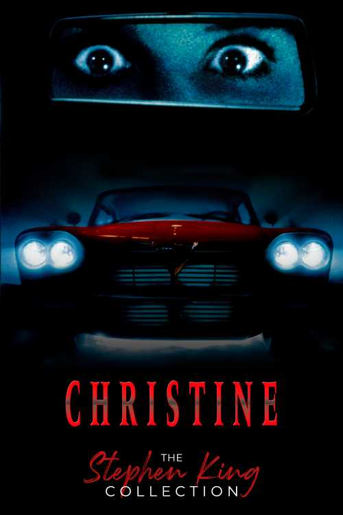
Christine
1983 · John Carpenter
-
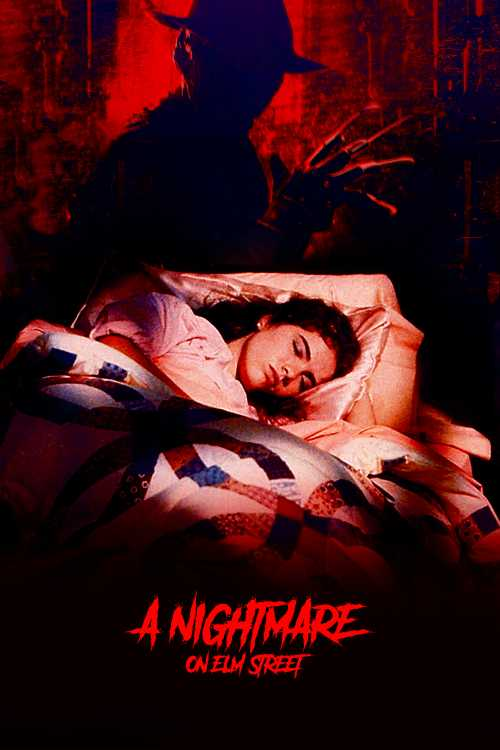
Pesadilla en Elm Street
1984 · Wes Craven
-
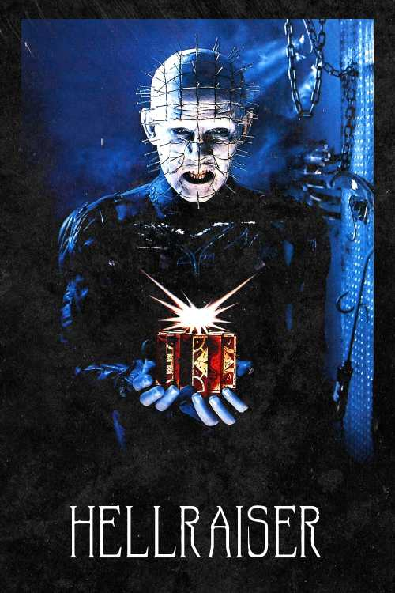
Hellraiser
1987 · Clive Barker
-
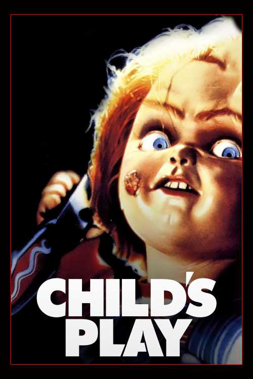
Muñeco Diabólico
1988 · Tom Holland
Sobrenatural
Casas encantadas, libros malditos y muertos que vuelven.
-
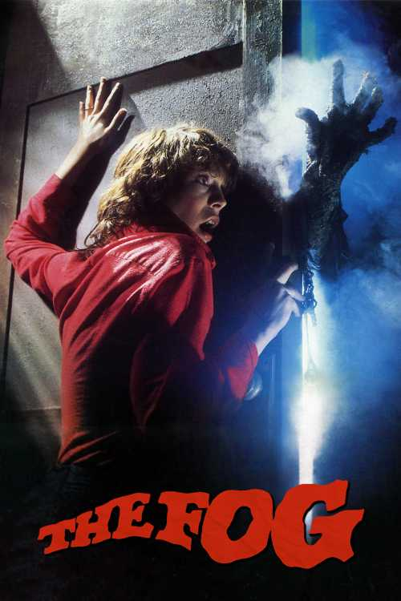
La Niebla
1980 · John Carpenter
-
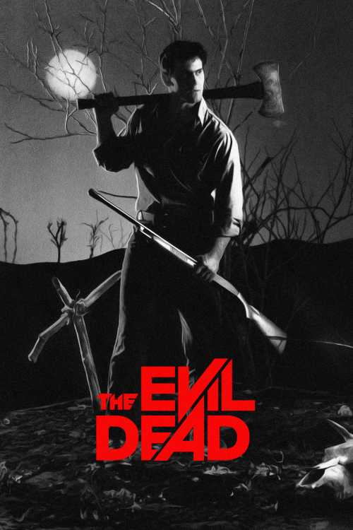
Posesión Infernal
1981 · Sam Raimi
-
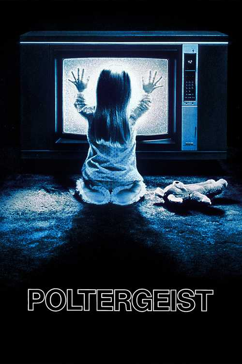
Poltergeist
1982 · Tobe Hooper
-
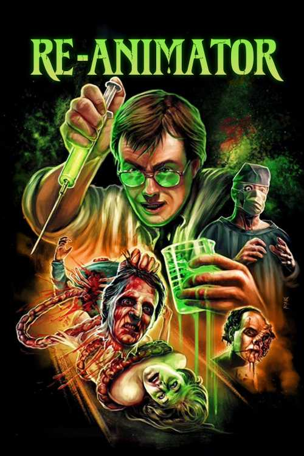
Re-Animator
1985 · Stuart Gordon
-
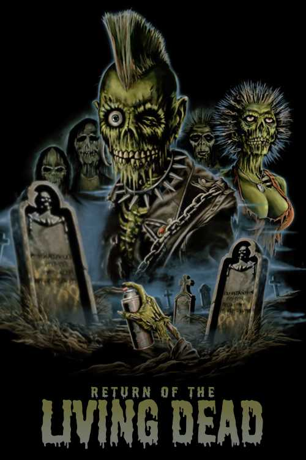
El Regreso de los Muertos Vivientes
1985 · Dan O'Bannon
-
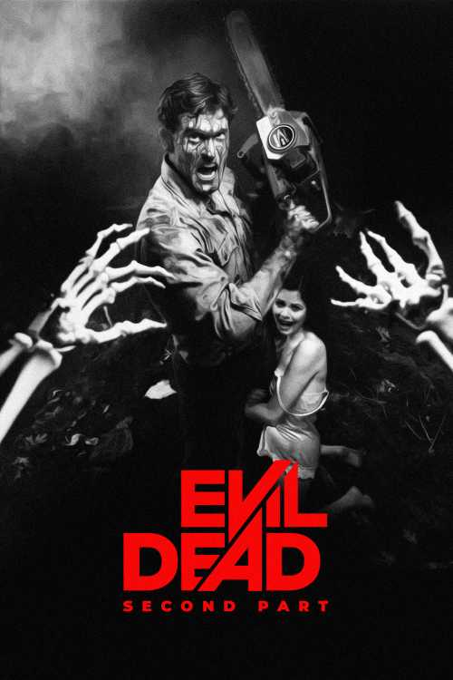
Terroríficamente Muertos
1987 · Sam Raimi
-
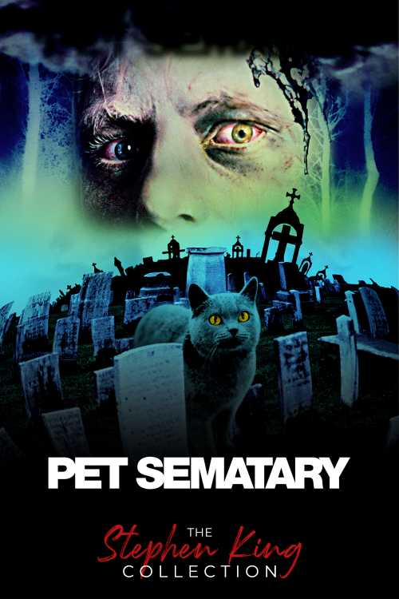
Cementerio Viviente
1989 · Mary Lambert
Monstruos
Licántropos, vampiros, alienígenas y mutaciones.
-
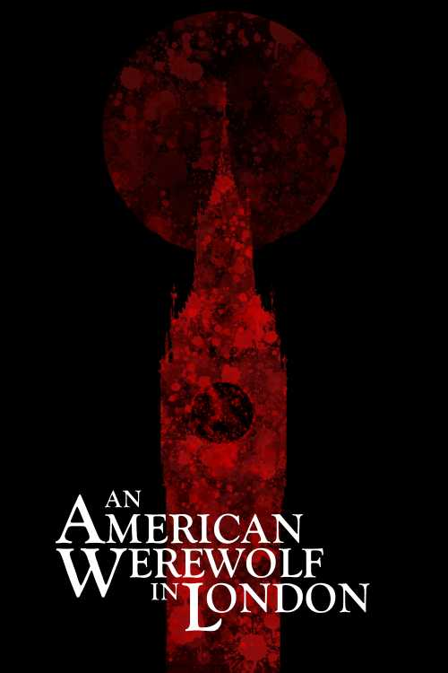
Un Hombre Lobo Americano en Londres
1981 · John Landis
-
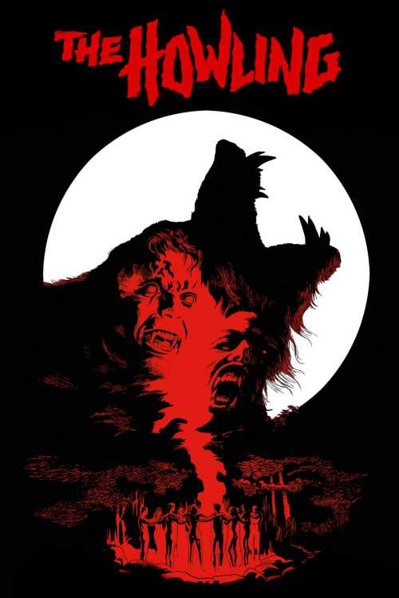
Aullidos
1981 · Joe Dante
-
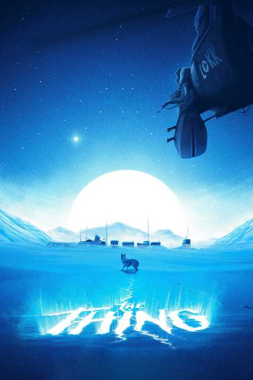
La Cosa
1982 · John Carpenter
-
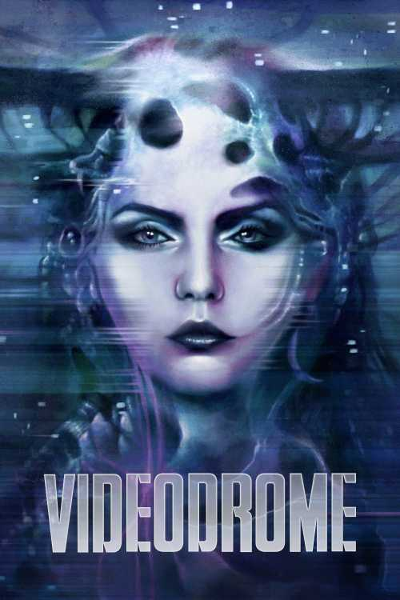
Videodrome
1983 · David Cronenberg
-
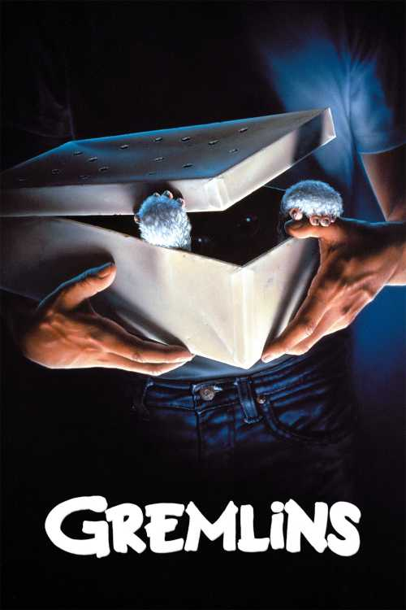
Gremlins
1984 · Joe Dante
-
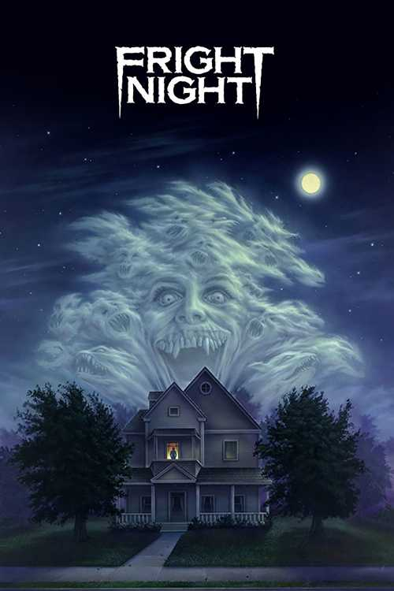
Noche de Miedo
1985 · Tom Holland
-
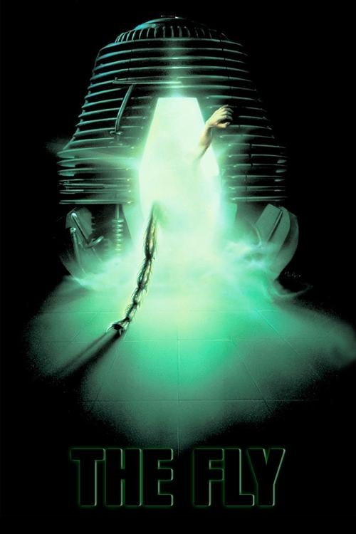
La Mosca
1986 · David Cronenberg